OpenJTalk g2p → EfficientEncoder(text→80-mel)→ Vocos(mel→音声)の2段構成。 EfficientSpeech(Atienza 2023, Apache-2.0)を 参照した軽量音響モデルを、作業幅 dim2 だけを変えて4段(supertiny/tiny/small/middle)に スケールし、品質(teacher-forced mel-L1)とメモリ(net RSS)を評価した記録。 全モデルは同一データ(JSUT 5000発話)・同一 mel 契約・同一トレーナーで学習。
ソース: github.com/nnn112358/minispeech | ← スペクトログラム比較デモに戻る
| tier | dim2 | 層数 | params | mel-L1 ↓ | net RSS ↓ | fp16 ONNX |
|---|---|---|---|---|---|---|
| supertiny | 32 | 4 | 0.072M | 0.743 | 4.09 MB | 0.188 MB |
| tiny | 64 | 12 | 0.144M | 0.650 | 5.26 MB | 0.349 MB |
| small | 128 | 12 | 0.373M | 0.525 | 7.09 MB | 0.807 MB |
| middle | 256 | 12 | 1.258M | 0.398 | 12.71 MB | 2.577 MB |
supertiny は tiny のちょうど半分の params(0.072M = 0.50×)。 min-mem 0.55解 small は mel-L1 ≤ 0.55 を満たす最小メモリ構成(7.09 MB, conv d128 の 8.86 MB を下回る)。
4段の EfficientEncoder × 4種の Vocos ボコーダ(d64/d128/d256/d512)= 16通りの text→音声(end-to-end)。 各セル: STFT スペクトログラム(画像クリックで再生ヘッド付き mp4)+ 音声プレイヤー。テキストは全て共通。 end-to-end fp16 サイズ = encoder(行) + vocoder(列)。最小 supertiny×d64 ≈ 1.0 MB、最大 middle×d512 ≈ 31.7 MB。
| enc \ voc | vocos_d640.8 MB | vocos_d1281.6 MB | vocos_d2564.3 MB | vocos_d51229.1 MB |
|---|---|---|---|---|
| supertiny0.19 MB | 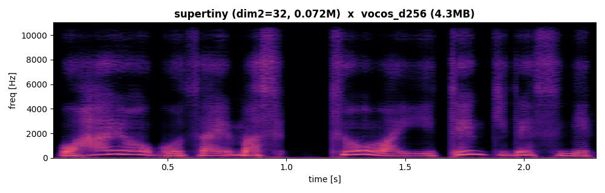 |
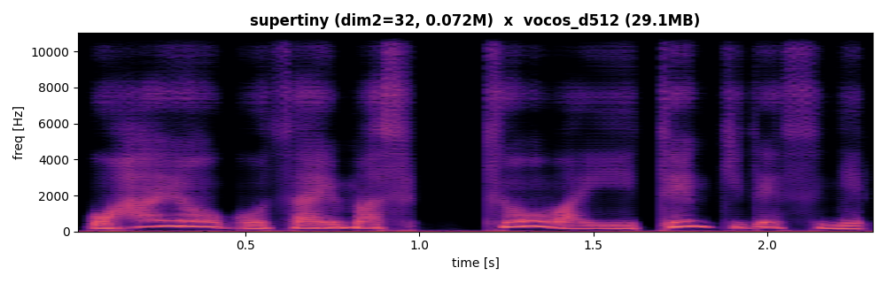 | ||
| tiny0.35 MB | 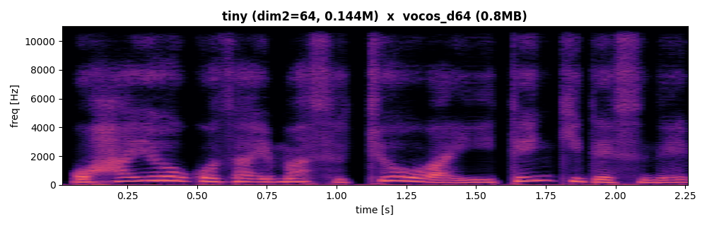 |
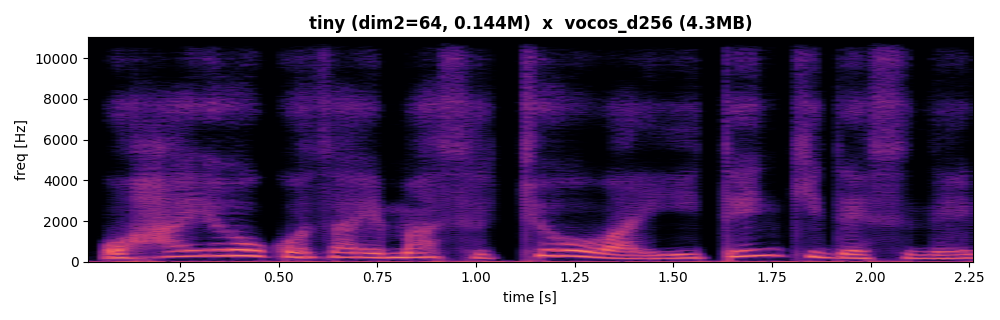 |
||
| small0.81 MB | 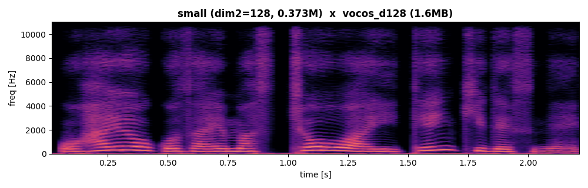 |
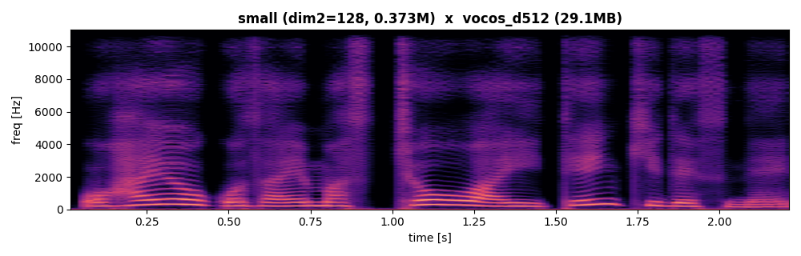 | ||
| middle2.58 MB | 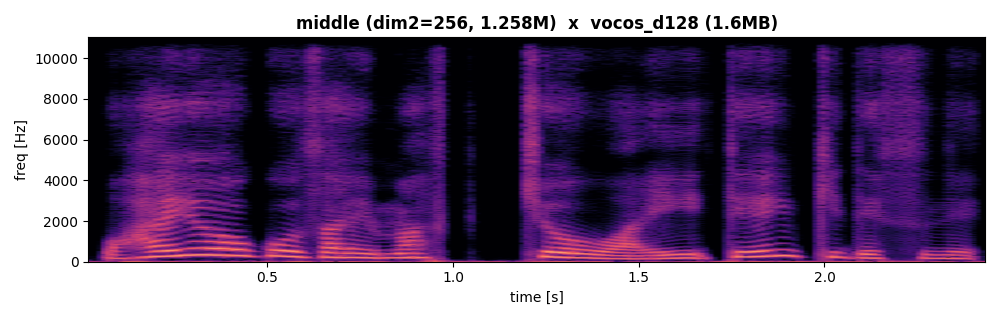 |
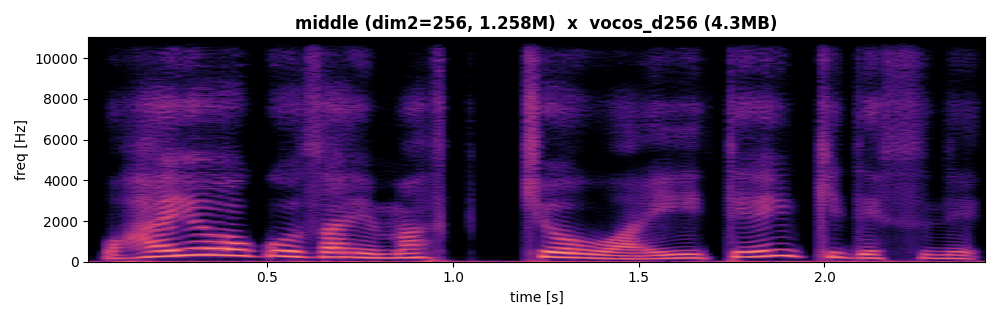 |
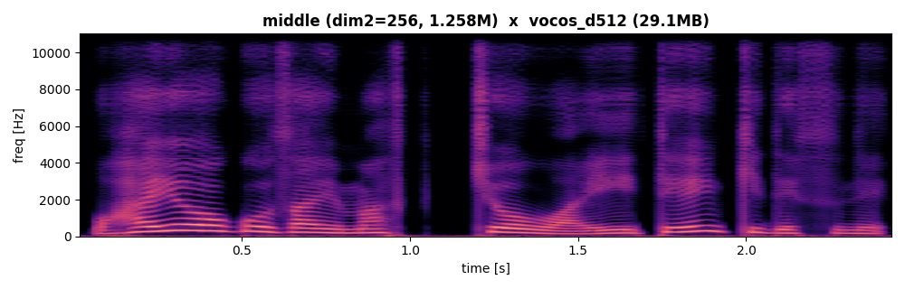 |
スペクトログラムは STFT(n_fft=1024, hop=256)。列を右へ = ボコーダ大、行を下へ = 音響モデル大。
既存の conv-only MiniSpeechEncoder(青)と Efficient lineup(赤)を、同一データ・同一 eval で重ね合わせ。
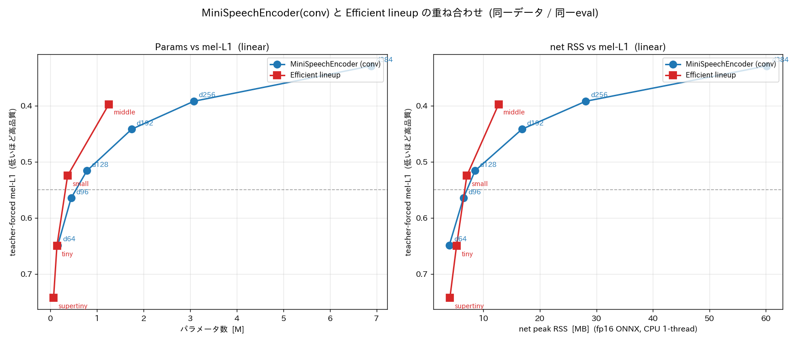
各セル = 合計 params(M) / 合計 net RSS(MB) = encoder + vocoder。net RSS は fp16 ONNX を CPU 1スレッド推論したモデル増分(floor 53MB 差引)。実プロセス総メモリ ≈ 表値 + floor 53MB(共有1回)。 ボコーダ(特に vocos_d512 = net 110MB)が系メモリを支配 — 軽量化の本丸はボコーダ側。
| encoder | params | net RSS |
|---|---|---|
| supertiny | 0.072M | 4.09 MB |
| tiny | 0.144M | 5.26 MB |
| small | 0.373M | 7.09 MB |
| middle | 1.258M | 12.71 MB |
| — conv (MiniSpeechEncoder) — | ||
| enc_d64 | 0.162M | 3.98 MB |
| enc_d96 | 0.449M | 6.48 MB |
| enc_d128 | 0.787M | 8.54 MB |
| enc_d192 | 1.746M | 16.83 MB |
| enc_d256 | 3.081M | 28.13 MB |
| enc_d384 | 6.883M | 60.16 MB |
| vocoder | params | net RSS |
|---|---|---|
| vocos_d64 | 0.45M | 5.44 MB |
| vocos_d128 | 0.58M | 8.60 MB |
| vocos_d256 | 1.91M | 17.35 MB |
| vocos_d512 | 13.50M | 110.77 MB |
| enc \ voc | vocos_d64 | vocos_d128 | vocos_d256 | vocos_d512 |
|---|---|---|---|---|
| supertiny | 0.52M / 9.5 | 0.65M / 12.7 | 1.98M / 21.4 | 13.57M / 114.9 |
| tiny | 0.59M / 10.7 | 0.72M / 13.9 | 2.05M / 22.6 | 13.64M / 116.0 |
| small | 0.82M / 12.5 | 0.95M / 15.7 | 2.28M / 24.4 | 13.87M / 117.9 |
| middle | 1.71M / 18.2 | 1.84M / 21.3 | 3.17M / 30.1 | 14.76M / 123.5 |
| enc \ voc | vocos_d64 | vocos_d128 | vocos_d256 | vocos_d512 |
|---|---|---|---|---|
| enc_d64 | 0.61M / 9.4 | 0.74M / 12.6 | 2.07M / 21.3 | 13.66M / 114.8 |
| enc_d96 | 0.90M / 11.9 | 1.03M / 15.1 | 2.36M / 23.8 | 13.95M / 117.3 |
| enc_d128 | 1.24M / 14.0 | 1.37M / 17.1 | 2.70M / 25.9 | 14.29M / 119.3 |
| enc_d192 | 2.20M / 22.3 | 2.33M / 25.4 | 3.66M / 34.2 | 15.25M / 127.6 |
| enc_d256 | 3.53M / 33.6 | 3.66M / 36.7 | 4.99M / 45.5 | 16.58M / 138.9 |
| enc_d384 | 7.33M / 65.6 | 7.46M / 68.8 | 8.79M / 77.5 | 20.38M / 170.9 |
緑 = 各系列の最小システム。conv は高dimで net RSS が急増(d384×d512=170.9MB)、efficient は中〜大域で系が軽い(middle×d512=123.5MB)。極小域(d64×d64)は両者ほぼ同等。
EfficientSpeech 本家の pitch/energy 予測器を復元 (variance adaptor) し、さらに残差 PostNet を追加した改善版。ピッチの不確定性 (mel-L1 の床) を条件付けで除去し、 tiny 系で累積 −17%。韻律が明示制御されるため抑揚が安定し、推論時の制御ノブも獲得。
| tier | params | mel-L1 (GT-p/e) ↓ | net RSS ↓ | L1素比 |
|---|---|---|---|---|
| tiny_vpn | 0.263M | 0.543 | 5.9 MB | −17% |
| small_vpn | 0.509M | 0.464 | 7.8 MB | −12% |
| mid_vpn | 1.461M | 0.363 | 13.6 MB | −8.5% |
mid_vpn (1.46M) は conv d256 (3.08M / 0.392) を半分以下のサイズで上回る。 mel-L1 は GT duration + GT pitch/energy を与えた teacher-forced 値。
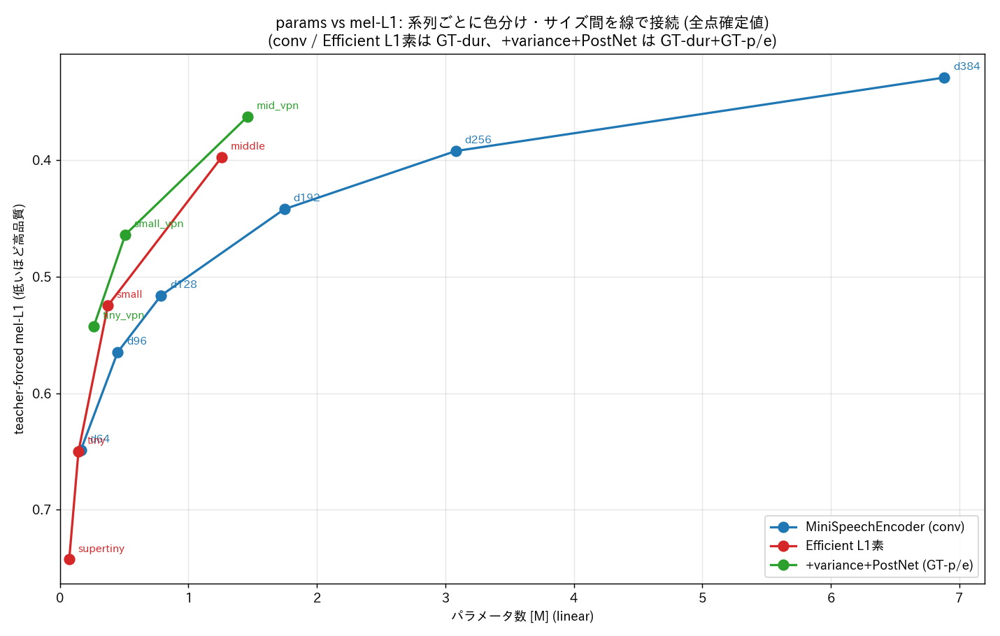
variance adaptor の副産物: 予測 pitch/energy を推論時にスケール/シフトするだけで声を制御できる
(synth.py --pitch-shift / --pitch-scale / --energy-shift)。すべて同一モデル・同一テキスト。
生成: EfficientEncoder + full Vocos / mini-jtts。 参照: EfficientSpeech (Atienza 2023, Apache-2.0)。